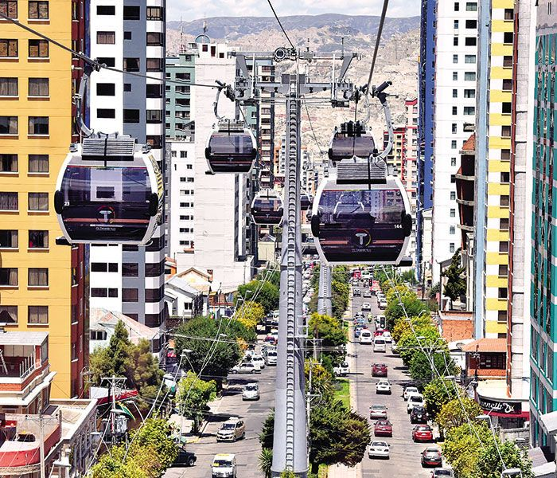

Participants of the LAWNP will have the right to participate in two main social events: the dinner, and the excursion. When you registrate, you have to choose the excursion you want to participate. Here, you will find details about the different excursions that are proposed in order to make your choice.
Dinner
The details of the dinner event will be added soon.
Excursions
Four different excursions are proposed to the participants: the visit to Chacaltaya, the visit of the Satellite Ground Station of the Bolivian Space Agency, the visit of archeological site of Tiwanaku, and finally the visit of the city by cable car associated with the visit of some museums.
CHACALTAYA
Chacaltaya is an iconic mountain for world-wide trekkers in the Cordillera Real. With an elevation of 5,421 meters (17,785 ft), not only the mountain itself is a wonderful attraction, but also the former skii resort, the Cosmic Ray Laboratory and the current Laboratory of Atmospheric Physics(LFA), both from the Physics Department of Universidad Mayor de San andrés.
Chacaltaya's glacier — which was as old as 18,000 years — had an area of 0.22 km2 (0.085 sq mi) in 1940, which had been reduced to 0.01 km2 (0.0039 sq mi) in 2007 and was completely gone by 2009. Half of the meltdown, as measured by volume, took place before 1980.[5] The final meltdown after 1980, due to missing precipitation and the warm phase of El Niño, resulted in the glacier's disappearance in 2009. The glacier was formerly one of the highest in South America, located about 30 kilometers (19 mi) from La Paz, near Huayna Potosí mountain. The glacier on Chacaltaya served as Bolivia's only ski resort. It was the world's highest lift-served ski area and the northernmost in South America as well as the world's second most equatorial after Maoke, Indonesia.
Located at 5,240 meters (17,190 ft), the Mount Chacaltaya Laboratory began as a weather station in 1942. Actually, the origins of the Physics Department of UMSA find their roots in Chacaltaya and its important discovery of the pi meson in 1947. You can find the Professor Cesar Lattes journey and the history behind this important discovery here . This site hosts a cosmic ray research group, and since 2011 the Chacaltaya Global Atmosphere Watch (GAW) station. The GAW station is one of the few monitoring sites of Essential Climate Variables (meteorological variables, aerosols and greenhouse gases) in the Southern Hemisphere. Last but not least, halfway up to Chacaltaya mountain at 4740 masl, the Cosmic Ray Group of the Physics Department has initiated a very important project regarding particle physics and the eventual development of high-energy astrophysics. For more information check the Alpaca Experiment .
In this excursion, you will have the unique oportunity to go by car at more than 5,200m asl and have an incredible point of view on the Cordillera Real, La Paz and the Altiplano, visit the laboratories, and observe the historial ski resort. For this trip, it is recommended that you take some snacks and water, comfortable walking shoes, sunglasses, sun protector, relative wollen clothes as it may be windy and cold and a raincoat in case of rainy days.
SATELLITE GROUND STATION "AMACHUMA"
In 2013, Bolivia was launching its first telecommunications satellite from the launching site of Xichang, China. Bolivian trained and qualified engineers are currently operating the satellite from the Amachuma Control and Operation Station located at 3,998 meters asl, about 1 hour by bus from the south side of La Paz city. It is a worhty half-day visit because of the priviliged view of the city and the marvelous Illimani mountain. The project belongs to the Bolivian Space Agency (ABE) and they have regular visits everyday. You can find more information (in spanish) here . If you are interested in the details of the satellite check this link . This is very interesting visit, don't miss it!
TIWANAKU
Tiwanaku is a Pre-Columbian archaeological site in western Bolivia near Lake Titicaca and one of the largest sites in South America. Surface remains currently cover around 4 square kilometers and include decorated ceramics, monumental structures, and megalithic blocks. The site's population probably peaked around AD 800 with 10,000 to 20,000 people, but the fundation of the site was around AD 110 (50–170, 68% probability), a date supported by the lack of ceramic styles from earlier periods.
In Tiwanaku, you will see: 1. The Stones used to build the temples, some weighing up to 25 tons each; all of the stones were transported to Tiwanaku before the wheel was invented. 2. The Akapana Pyramid, the largest structure; much of it no longer exists because its stones were used to construct other buildings on the Altiplano. The pyramid is thought to have been a sepulcre and the remains of human sacrifices were found there. 3. The Kalasasaya Temple, the stones of this temple were cut and put together so precisely that you cannot slide a knife between them. It housed what used to be a ceremonial platform, what may have been sleeping quarters for its priests, and several “monolitos” (monoliths) which are one of the more sought-after sights on Tiwanaku tours. It is known as the temple of the standing stones. 4. The Gate of the Sun, called the Puerta del Sol, weighs over 13 tons and, although it has a crack in it, was built from a single rock. It stands upright and is one of the best known archeological symbols of Bolivia. 5. The Underground Temple which has nearly 200 sculptures of heads. Some people say they look like aliens. They were most likely representative of ethnic cultures of the area. It's quite fascinating as no two are alike. 6. The Monoliths, a group of sculptures that thought to represent important personages. The most important of these are the Monolito Bennett (named after the W.C. Bennett who discovered it) which now stands inside the on-site museum; and the Monolito Barbado or "bearded one", which is also known as "Kontiki" and has anthropomorphic features and zoomorphic decorations. The Monolito El Fraile (the Friar) is thought to have been one of the first sculptures to be built. The Monolito Ponce was named for Bolivian archaeologist Carlos Ponce Sanjinés, who is now deceased. It is located in the temple of Kalasasaya and is rich in Tiwanakota iconography and anthropomorphic symbols. After the visit of the archaeological site, you can visit the museum to discover the richness of this ancient culture.

Located at 3,870 meters asl and 76 km (47 miles) from La Paz city, it takes almost 2 hours to get there. For this trip, it is recommended that you take some snacks and water, comfortable walking shoes, sunglasses, sun protector, relative wollen clothes as it may be windy and cold and a raincoat in case of rainy days. You can find more information of the top sights of the Tiwanaku ruins here and here .
CITY by CABLE CAR and MUSEUMS
Snow-capped mountains peek above the clouds in the distance, overlooking the chaotic mess of traffic left far below. Throngs of tiny, tiny people go about their daily life – unaware of the silent observers looking on from above on the La Paz Cable Car in Bolivia. This is now a daily reality of life here in Bolivia’s administrative capital, and nearby El Alto – the world’s highest metropolis which spread across the cliffs above 4,150m. The La Paz Cable Car in Bolivia is the world first example of cable cars being used as a primary transport network rather than connecting to a larger network of subways or trains. In contrast to the surrounding narrow streets, uninspired architecture and gritty atmosphere the new cable car stations are a beacon of modernity in this fast developing country. Futuristic, clean, high-tech and grand – the La Paz Cable Car was designed for the city La Paz wishes to become. Upon entering the eight-person cabins, you are enveloped in silence. The views keep you entertained for hours – a bird’s eye view of the ground below. It is surreal and refreshing to see a city from a completely new angle and grasp just how big and sprawling this city truly is.
This visit of the city by the air will be coupled with the visit of some museums. Enjoy it! More information about the cable car: here and here .
